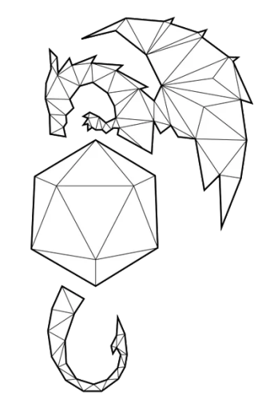
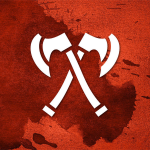

Cómo comenzar a jugar a Dungeons & Dragons
 - Reúne a tu grupo antes de continuar
Dungeons & Dragons es un juego para jugar en compañía, por lo que necesitaréis
como
mínimo dos personas (aunque es más divertido con más jugadores que puedan
aportar más
cosas). Una de las personas en el grupo ejerce el papel de "Master" o "Director
de
juego", y es quien crea la historia, dirige la narrativa y se encarga de
interpretar al
resto de personajes que no son los jugadores.
El papel del Master es crear una
historia y conducirla para que los jugadores puedan centrarse en jugar a sus
personajes, resolver un misterio, completar la mazmorra actual, o lo que sea que
requiera la trama.
Cada jugador maneja un personaje, que puede haber creado él mismo o sido
proporcionado
por el Master para la partida que se va a jugar. Dentro del mundo de Dungeons &
Dragons
hay diferentes razas para elegir: elfos, enanos, humanos, goblins, dracónidos...
y
varias clases como mago, paladín o bardo, cada una con una serie de
características y
habilidades diferentes.
Si estáis creando vosotros mismos al personaje, elegid una combinación que os
guste y
pensad qué es lo que os apetece más jugar: un tiefling clérigo, una semielfa
barda, un
humano guerrero... Lo ideal es que el grupo esté más o menos equilibrado, pero
al final
se trata de pasárselo bien y manejar a un personaje que os invite a jugar con él
en las
aventuras que vayáis a vivir con el resto del equipo.
- Las reglas están para ayudarte
Ahora que ya os hemos hecho la cabeza un lío hablando de razas y clases, es el
momento
de hablaros de Los Manuales. Dentro del catálogo de Dungeons & Dragons existen
varios
libros que recogen las reglas del juego, siendo los más básicos el Manual del
Jugador,
la Guía del Dungeon Master y el Manual de Monstruos. Cada uno de ellos cubre un
aspecto
diferente, pero el más básico que necesitaréis es el Manual del Jugador, ya que
cubre
todo el proceso de creación del personaje, reglas de combate, turnos y muchos
trucos
para comenzar a construir una campaña como Master.
Las reglas son básicas para poder jugar, pero hay ciertas veces que se vuelven
complicadas o innecesarias dependiendo del grupo y sus necesidades. No tengáis
miedo
de
cambiar las reglas, o incluso de usar reglas hechas en casa por vosotros. Si los
pasos
para lanzar hechizos son demasiado complicados, ¡pues cambiadlos hasta dar con
algo
que
sea más divertido para vosotros!. Lo importante es pasárselo bien, si una parte
del
sistema está haciendo que la partida no funcione, entonces siempre podéis
cambiarla
o
readaptarla.
También podéis enfocar la partida más a un tono interpretativo, de matar
monstruos o
una
mezcla, depende de lo que os apetezca. No hace falta ser un actor profesional,
pero
"interpretar" ayuda a meterse más en la partida y puede hacer el juego más
divertido,
aunque siempre se puede simplemente describir qué hacen o cómo actúan los
personajes.
- Cómo empezar una partida
Además de estos manuales que os comentamos, también existe una Caja de Inicio
que
contiene un manual más resumido, una primera aventura lista para jugar, varios
personajes pregenerados y un juego de dados, con lo que tendríais todo lo básico
que
necesitáis para una partida. Es una opción muy buena para darle una primera
oportunidad
aDungeons & Dragons, especialmente para pillar el truco a las reglas más
esenciales
y no
bloquearse a la hora de crear un personaje.
Si es la primera vez que el grupo juega, también se suele recomendar comenzar
con
una
partida corta y contenida, que solo vaya a llevar una o dos sesiones. De esta
manera
tanto los jugadores como el Master pueden adaptarse al resto del grupo, los
personajes y
su dinámica. Hay muchas historias oficiales pregeneradas, como la de la caja de
inicio,
y dentro del catálogo de Edge ya están disponibles varias historias listas para
jugar,
como La Maldición de Strahd o Waterdeep: El Golpe de los Dragones.
¿Que queréis echarle imaginación y crear vuestras propias historias y mundo?
¡Pues
adelante! No tengáis miedo de crear un mundo de D&D entre todos, o utilizar un
escenario
ya conocido como Reinos Olvidados. Las historias pregeneradas son una buena
ayuda
para
entender cómo construir una partida y personajes no-jugadores, pero no hace
falta
limitarse a ellas y también podéis empezar a jugar por todo lo alto con una
historia
original.
- El buen rollo es fundamental
Unas de las cosas más importantes para aprender a jugar a Dungeons and Dragons
es
procurar que haya buen rollo en el grupo. Habrá veces que se produzcan
situaciones
estresantes o más extremas durante el juego, pero es fundamental llevarse bien
con
los
otros jugadores y con el Master. Si algo no está funcionando con el juego, tened
paciencia e intentad encontrar una solución.
Dungeons & Dragons no es un juego de Master vs Jugadores. No se gana nada ni hay
un
jugador que gane sobre el resto, sino que, de hecho, normalmente hay que
colaborar
para
poder mover la trama y poder continuar con la partida. Si un jugador sabotea
activamente
al resto, o un personaje intenta brillar por encima del resto tratando de
conseguir
siempre el protagonismo, es mejor hablarlo y aclarar las cosas. De la misma
forma,
si no
entendéis algo, pedid ayuda. Un buen grupo explica las cosas y te da el tiempo
que
necesites para decidir tus acciones.
El Master normalmente dedica bastante tiempo a preparar las partidas, por lo que
también
es necesario respetarlo. No interrumpáis durante las descripciones y prestad
atención
durante la narración para enteraros de las cosas. Igualmente, si sois Master, no
os
dediquéis a torturar a vuestros jugadores para saliros siempre con la vuestra,
vuestra
labor también es hacer el juego entretenido para todos.
- Herramientas de oficio
Además de los manuales y la historia que vayáis a jugar, también necesitaréis
otras
cosas básicas: las fichas y dados. Las fichas contienen todas las
características
del
personaje y sus habilidades, y con los dados se pueden determinar diferentes
acciones.
Es posible que necesitéis diferentes tipos de dados, por lo que lo mejor es
hacerse
un
par de sets variados. Si jugáis "en físico", recordad también tener a mano
lápices y
una
libreta para apuntar cosas relevantes como nombres de lugares o de personajes o
resúmenes de lo que ha pasado hasta ahora.
También existen páginas y apps como D&D Beyond, que contiene todos los libros
oficiales
y te permite crear una hoja de personaje digital y consultar cada característica
al
momento. Si además no jugáis presencialmente, podéis jugar a través de Roll20,
que
también permite almacenar las hojas de personaje, crear mapas e incluso hacer
tiradas de
dados, por lo que si jugáis a través de videoconferencia ayuda muchísimo a que
todos
podáis ver el mismo escenario y tengáis la misma información. Con ambas webs
tenéis
parte del contenido básico de Dungeons & Dragons de manera gratuita, pero
también
podéis
pagar para acceder a ciertas expansiones, razas u otras características.
Youtube es vuestro amigo, y hay muchísimos canales dedicados a explicar reglas o
aportar
trucos para hacer mejor vuestra partida. Si no le tenéis miedo al inglés, el
Handbooker
Helper del equipo de Critical Role ayuda muy bien a entender algunas de las
bases
del
juego. Si queréis ser Masters, pero no sabéis muy bien cómo darle más vidilla a
vuestra
partida, los Game Master Tips de Geek & Sundry son una auténtica maravilla con
consejos
de diferentes directores de juego.
Todo estos son consejos si no sabéis por dónde empezar con vuestra partida de
Dungeons &
Dragons, aunque también se pueden aplicar a muchos otros juegos de rol. El
objetivo
siempre es pasar un buen rato entre amigos y construir una historia entre todos,
por
lo
que (igual que con las reglas de los manuales) veis que algo no funciona,
siempre
podéis
cambiarlo y adaptarlo.
Video que explica como se juega
Video que enseña como rellenar la tabla de personaje de la quinta edicion
Clases
- BÁRBARO
Para algunos, su rabia brota de la comunión con
espíritus de animales salvajes.
Otros recurren a su hirviente reserva de ira frente a un mundo lleno de dolor.
Para
los bárbaros, la furia es un poder que no sólo les proporciona un frenesí
ciego
en la batalla, sino también extraordinarios reflejos, resistencia y proezas de
fuerza.
Equipo: Además del que obtengas por tu trasfondo, empiezas con el siguiente
equipo:
- (a) un hacha a dos manos o (b) cualquier arma cuerpo a cuerpo marcial;
- (a) dos hachas de mano o (b) cualquier arma sencilla; un paquete de explorador y cuatro jabalinas.
Origen: Reglas Basicas
Puntos de Golpe: d12
Requisitos para multiclase: Fuerza 13
- BARDO
Ya sea un erudito, un poeta o un canalla, un bardo teje su magia a través de sus
palabras y su música para inspirar a los aliados, desmoralizar a los enemigos,
manipular mentes, crear ilusiones e incluso sanar heridas.
Equipo: Además del que obtengas por tu trasfondo, empiezas con el siguiente
equipo:
- (a) un estoque, (b) una espada larga o (c) cualquier arma sencilla;
- (a) un paquete de diplomático o (b) un paquete de artista;
- (a) un laúd o (b) cualquier otro instrumento musical; armadura de cuero y una daga.
Origen: Reglas Basicas
Puntos de Golpe: d8
Requisitos para multiclase: Carisma 13
Magia
- Lanzador de conjuros: Lanzador puro
- Lanzamiento de conjuros: Mediante conjuros conocidos
- Nivel de conjuro máximo: Nivel 9
- Puede lanzar trucos: Sí
- Aptitud mágica: Carisma
- Lista de conjuros: Conjuros de bardo
- BRUJO
Los brujos son buscadores del conocimiento que se encuentra escondido en el
multiverso. A través de pactos hechos con seres poderosos de poder sobrenatural,
los brujos desatan efectos mágicos tanto sutiles como espectaculares y
recolectan secretos arcanos para potenciar su propio poder.
Equipo: Además del que obtengas por tu trasfondo, empiezas con el siguiente
equipo:
- (a) una ballesta ligera y 20 virotes o (b) cualquier arma sencilla;
- (a) un saquito de componentes o (b) un canalizador arcano;
- (a) un paquete de erudito o (b) un paquete de explorador de mazmorras; una armadura
Origen: Reglas Basicas
Puntos de Golpe: d8
Requisitos para multiclase: Carisma 13
Magia
- Lanzador de conjuros: Lanzador de pacto
- Lanzamiento de conjuros: Mediante conjuros conocidos
- Nivel de conjuro máximo: Nivel 5
- Puede lanzar trucos: Sí
- Aptitud mágica: Carisma
- Lista de conjuros: Conjuros de brujo
- CLÉRIGO
Los clérigos son intermediarios entre el mundo mortal y los distantes planos
divinos. Tan diferentes entre ellos como los dioses a los que sirven, los
clérigos se esfuerzan por personificar las obras de sus deidades. No son
sacerdotes ordinarios, un clérigo se encuentra imbuido de magia divina.
Equipo: Además del que obtengas por tu trasfondo, empiezas con el siguiente
equipo:
- (a) una maza o (b) un martillo de guerra (si eres competente);
- (a) una cota de escamas, (b) una armadura de cuero o (c) una cota de malla (si eres competente);
- (a) una ballesta ligera y 20 virotes o (b) cualquier arma sencilla;
- (a) un paquete de sacerdote o (b) un paquete de explorador; un escudo y un símbolo sagrado.
Origen: Reglas Basicas
Puntos de Golpe: d8
Requisitos para multiclase: Sabiduría 13
Magia
- Lanzador de conjuros: Lanzador puro
- Lanzamiento de conjuros: Mediante conjuros preparados
- Nivel de conjuro máximo: Nivel 9
- Puede lanzar trucos: Sí
- Aptitud mágica: Sabiduría
- Lista de conjuros: Conjuros de clérigo
- DRUIDA
Ya sea invocando a las fuerzas elementales o emulando a las criaturas del mundo
animal, los druidas son la personificación de la resistencia, astucia y furia de
la naturaleza. Dicen no tener un dominio sobre la naturaleza. En lugar de eso,
se ven como una extensión de la voluntad indomable de la misma.
Equipo: Además del que obtengas por tu trasfondo, empiezas con el siguiente
equipo:
- (a) un escudo de madera o (b) cualquier arma sencilla;
- (a) una cimitarra o (b) cualquier arma cuerpo a cuerpo sencilla; armadura de cuero, un paquete de explorador y un canalizador druídico.
Origen: Reglas Basicas
Puntos de Golpe: d8
Requisitos para multiclase: Sabiduría 13
Magia
- Lanzador de conjuros: Lanzador puro
- Lanzamiento de conjuros: Mediante conjuros preparados
- Nivel de conjuro máximo: Nivel 9
- Puede lanzar trucos: Sí
- Aptitud mágica: Sabiduría
- Lista de conjuros: Conjuros de druida
- EXPLORADOR
Lejos del bullicio de las ciudades y pueblos, más allá de las defensas que
mantienen a las granjas más lejanas protegidas de los terrores de la naturaleza,
en medio de tupidos bosques sin caminos y a través de enormes y vacías llanuras,
los exploradores mantienen su interminable guardia.
Equipo: Además del que obtengas por tu trasfondo, empiezas con el siguiente
equipo:
- (a) una cota de escamas o (b) una armadura de cuero;
- (a) dos espadas cortas o (b) dos armas cuerpo a cuerpo sencillas;
- (a) un paquete de explorador de mazmorras o (b) un paquete de explorador; un arco largo y una aljaba con 20 flechas.
Origen: Reglas Basicas
Puntos de Golpe: d10
Requisitos para multiclase:
Destreza 13 y Sabiduría 13
Magia
- Lanzador de conjuros: Lanzador medio
- Lanzamiento de conjuros: Mediante conjuros conocidos
- Nivel de conjuro máximo: Nivel 5
- Puede lanzar trucos: No
- Aptitud mágica: Sabiduría
- Lista de conjuros: Conjuros de explorador>
- GUERRERO
Todos los guerreros comparten un dominio magistral de las armas y armaduras, y
un exhaustivo conocimiento de las habilidades del combate. Además, están muy
relacionados con la muerte, tanto repartiéndola como mirándola fijamente,
desafiantes.
Equipo: Además del que obtengas por tu trasfondo, empiezas con el siguiente
equipo:
- (a) una cota de malla o (b) una armadura de cuero, un arco largo y 20 flechas;
- (a) un arma marcial y un escudo o (b) dos armas marciales;
- (a) una ballesta ligera y 20 virotes o (b) dos hachas de mano;
- (a) un paquete de explorador de mazmorras o (b) un paquete de explorador.
Origen: Reglas Basicas
Puntos de Golpe: d10
Requisitos para multiclase:
Fuerza 13 o Destreza 13
- HECHICERO
Los hechiceros tienen una magia innata, conferida por una línea de sangre
exótica, una influencia de otro mundo o la exposición a fuerzas cósmicas
desconocidas. Uno no puede estudiar hechicería como quien estudia un lenguaje,
más de lo que uno puede aprender a vivir una vida legendaria. Nadie elige la
hechicería, el poder elige al hechicero.
Equipo: Además del que obtengas por tu trasfondo, empiezas con el siguiente
equipo:
- (a) una ballesta ligera y 20 virotes o (b) cualquier arma sencilla;
- (a) un saquito de componentes o (b) un canalizador arcano;
- (a) un paquete de explorador de mazmorras o (b) un paquete de explorador; dos dagas.
Origen: Reglas Basicas
Puntos de Golpe: d6
Requisitos para multiclase: Carisma 13
Magia
- Lanzador de conjuros: Lanzador puro
- Lanzamiento de conjuros: Mediante conjuros conocidos
- Nivel de conjuro máximo: Nivel 9
- Puede lanzar trucos: Sí
- Aptitud mágica: Carisma
- Lista de conjuros: Conjuros de hechicero
- MAGO
Los magos son los practicantes supremos de la magia, definidos y unidos como una
clase por los hechizos que conjuran. A partir de la sutil onda de la magia que
impregna el cosmos, los magos lanzan explosivos hechizos de fuego, arcos
voltaicos, sutiles engaños y brutales formas de control mental.
Equipo: Además del que obtengas por tu trasfondo, empiezas con el siguiente
equipo:
- (a) un bastón o (b) una daga;
- (a) un saquito de componentes o (b) un canalizador arcano;
- (a) un paquete de erudito o (b) un paquete de explorador; un libro de conjuros.
Origen: Reglas Basicas
Puntos de Golpe: d6
Requisitos para multiclase: Inteligencia 13
Magia
- Lanzador de conjuros: Lanzador puro
- Lanzamiento de conjuros: Mediante conjuros preparados
- Nivel de conjuro máximo: Nivel 9
- Puede lanzar trucos: Sí
- Aptitud mágica: Inteligencia
- Lista de conjuros: Conjuros de mago
 -
MONJE
-
MONJE
Cualquiera que sea su disciplina, los monjes están unidos por su habilidad para
utilizar mágicamente la energía que corre por sus cuerpos. Ya sea canalizada
en una impactante demostración de proeza marcial o en el sutil enfoque en la
habilidad defensiva y la velocidad, esta energía impulsa todo lo que el monje
hace.
Equipo: Además del que obtengas por tu trasfondo, empiezas con el siguiente
equipo:
- (a) una espada corta o (b) cualquier arma sencilla;
- (a) un paquete de explorador de mazmorras o (b) un paquete de explorador; 10 dardos.
Origen: Reglas Basicas
Puntos de Golpe: d8
Requisitos para multiclase:
Destreza 13 y Sabiduría 13
- PALADÍN
Sean cuales sean sus orígenes y sus misiones, los paladines están unidos por sus
juramentos para luchar en contra de las fuerzas del mal. El juramento de un
paladín es un lazo muy poderoso. Es una fuente de poder que convierte a un
devoto guerrero en un campeón bendecido.
Equipo: Además del que obtengas por tu trasfondo, empiezas con el siguiente
equipo:
- (a) un arma marcial y un escudo o (b) dos armas marciales;
- (a) cinco jabalinas o (b) cualquier arma cuerpo a cuerpo sencilla;
- (a) un paquete de sacerdote o (b) un paquete de explorador; una cota de malla y un símbolo sagrado.
Origen: Reglas Basicas
Puntos de Golpe: d10
Requisitos para multiclase:
Fuerza 13 y Carisma 13
Magia
- Lanzador de conjuros: Lanzador medio
- Lanzamiento de conjuros: Mediante conjuros preparados
- Nivel de conjuro máximo: Nivel 5
- Puede lanzar trucos: No
- Aptitud mágica: Carisma
- Lista de conjuros: Conjuros de paladín
- PÍCARO
Los pícaros confían sus habilidades, el sigilo y las vulnerabilidades de sus
oponentes para lograr sacar ventaja en cualquier situación. Tienen un don para
encontrar la solución a prácticamente cualquier problema, demostrando un
ingenio y versatilidad, que es la piedra angular de cualquier buen grupo de
aventureros.
Equipo: Además del que obtengas por tu trasfondo, empiezas con el siguiente
equipo:
- (a) un estoque o (b) una espada corta;
- (a) un arco corto y una aljaba de 20 flechas o (b) una espada corta;
- (a) un paquete de ladrón, (b) un paquete de explorador de mazmorras o (c) un paquete de explorador;
- (a) una armadura de cuero, dos dagas y herramientas de ladrón.
Origen: Reglas Basicas Puntos de Golpe: d8
Requisitos para multiclase: Destreza 13